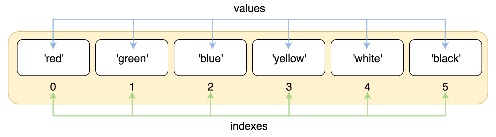

Python3 リスト
シーケンスは Python において最も基本的なデータ構造です。
シーケンス内の各値には対応する位置の値（インデックス）があり、最初のインデックスは 0、2番目のインデックスは 1、以降も同様に続きます。
Python には6つの組み込みシーケンス型がありますが、最も一般的なのはリストとタプルです。
リストで実行できる操作には、インデックス、スライス、加算、乗算、メンバー検査があります。
さらに、Python にはシーケンスの長さや最大・最小の要素を求めるメソッドが組み込まれています。
リストは最もよく使われる Python データ型で、角括弧内にカンマ区切りの値として記述できます。
リストのデータ項目は同じ型である必要はありません。
リストを作成するには、カンマで区切った異なるデータ項目を角括弧で囲むだけです。次に示すとおりです：
list2 = [1, 2, 3, 4, 5 ]
list3 = ["a", "b", "c", "d"]
list4 = ['red', 'green', 'blue', 'yellow', 'white', 'black']
リストの値にアクセスする
文字列のインデックスと同様に、リストのインデックスは0から始まり、2番目のインデックスは1で、以降も同様に続きます。
インデックスを使うと、リストのスライスや結合などの操作ができます。

例
list = ['red', 'green', 'blue', 'yellow', 'white', 'black']
print( list[0] )
print( list[1] )
print( list[2] )
上記の例の出力結果：
red green blue
インデックスは末尾から始めることもでき、最後の要素のインデックスは-1、その1つ前は-2で、以降も同様です。

例
list = ['red', 'green', 'blue', 'yellow', 'white', 'black']
print( list[-1] )
print( list[-2] )
print( list[-3] )
上記の例の出力結果：
black white yellow
添字インデックスを使ってリストの値にアクセスできます。同様に角括弧[]の形式で文字をスライスすることもできます。次に示すとおりです：

例
nums = [10, 20, 30, 40, 50, 60, 70, 80, 90]
print(nums[0:4])
上記の例の出力結果：
[10, 20, 30, 40]
負のインデックス値を使ったスライス：
例
list = ['Google', 'Runoob', "Zhihu", "Taobao", "Wiki"]
# 2番目の要素を読み取る
print ("list[1]: ", list[1])
# 2番目から（含む）最後から2番目まで（含まない）をスライス
print ("list[1:-2]: ", list[1:-2])
上記の例の出力結果：
list[1]: Runoob list[1:-2]: ['Runoob', 'Zhihu']
リストの更新
リストのデータ項目を修正または更新できます。append() メソッドを使ってリスト項目を追加することもできます。次に示すとおりです：
例（Python 3.0+）
list = ['Google', 'Runoob', 1997, 2000]
print ("3番目の要素 : ", list[2])
list[2] = 2001
print ("更新後の3番目の要素 : ", list[2])
list1 = ['Google', 'Runoob', 'Taobao']
list1.append('Baidu')
print ("更新後のリスト : ", list1)
注意：次の章でappend()メソッドの使用について説明します。
上記の例の出力結果：
第三个元素为 : 1997 更新后的第三个元素为 : 2001 更新后的列表 : ['Google', 'Runoob', 'Taobao', 'Baidu']
リスト要素の削除
del 文を使ってリスト内の要素を削除できます。次の例のとおりです：
例（Python 3.0+）
list = ['Google', 'Runoob', 1997, 2000]
print ("元のリスト : ", list)
del list[2]
print ("3番目の要素を削除 : ", list)
上記の例の出力結果：
原始列表 : ['Google', 'Runoob', 1997, 2000] 删除第三个元素 : ['Google', 'Runoob', 2000]
注意：次の章で remove() メソッドの使用について説明します。
Python リストスクリプト演算子
リストに対する + と * の演算子は文字列と似ています。+ はリストの連結に使われ、* はリストの繰り返しに使われます。
次に示すとおりです：
| Python 式 | 結果 | 説明 |
|---|---|---|
| len([1, 2, 3]) | 3 | 長さ |
| [1, 2, 3] + [4, 5, 6] | [1, 2, 3, 4, 5, 6] | 連結 |
| ['Hi!'] * 4 | ['Hi!', 'Hi!', 'Hi!', 'Hi!'] | 繰り返し |
| 3 in [1, 2, 3] | True | 要素がリスト内に存在するか |
| for x in [1, 2, 3]: print(x, end=" ") | 1 2 3 | 反復 |
Python リストのスライスと連結
Python のリストのスライスは文字列操作と似ています。次に示すとおりです：
操作：
| Python 式 | 結果 | 説明 |
|---|---|---|
| L[2] | 'Taobao' | 3番目の要素を読み取る |
| L[-2] | 'Runoob' | 右側から数えて最後から2番目の要素を読み取る: count from the right |
| L[1:] | ['Runoob', 'Taobao'] | 2番目の要素以降のすべての要素を出力 |
>>> L[2]
'Taobao'
>>> L[-2]
'Runoob'
>>> L[1:]
['Runoob', 'Taobao']
>>>
リストは連結操作もサポートしています：
>>> squares += [36, 49, 64, 81, 100]
>>> squares
[1, 4, 9, 16, 25, 36, 49, 64, 81, 100]
>>>
ネストしたリスト
ネストしたリストとは、リスト内に別のリストを作成することです。例：
>>> n = [1, 2, 3]
>>> x = [a, n]
>>> x
[['a', 'b', 'c'], [1, 2, 3]]
>>> x[0]
['a', 'b', 'c']
>>> x[0][1]
'b'
リストの比較
リストの比較にはoperatorモジュールのeqメソッドが必要です（参照：Python operator モジュール）：
例
import operator
a = [1, 2]
b = [2, 3]
c = [2, 3]
print("operator.eq(a,b): ", operator.eq(a,b))
print("operator.eq(c,b): ", operator.eq(c,b))
上記のコードの出力結果は次のとおりです：
operator.eq(a,b): False operator.eq(c,b): True
Python リスト関数＆メソッド
Python には次の関数があります:
| 番号 | 関数 |
|---|---|
| 1 | len(list) リストの要素数 |
| 2 | max(list) リストの要素の最大値を返す |
| 3 | min(list) リストの要素の最小値を返す |
| 4 | list(seq) タプルをリストに変換する |
Python には次のメソッドがあります:
| 番号 | メソッド |
|---|---|
| 1 | list.append(obj) リストの末尾に新しいオブジェクトを追加する |
| 2 | list.count(obj) リスト内である要素が出現する回数を数える |
| 3 | list.extend(seq) リストの末尾に別のシーケンスの複数の値を一度に追加する（新しいリストで元のリストを拡張する） |
| 4 | list.index(obj) リスト内である値の最初に一致する項目のインデックス位置を見つける |
| 5 | list.insert(index, obj) リストにオブジェクトを挿入する |
| 6 | list.pop([index=-1]) リスト内の要素を1つ削除し（デフォルトでは最後の要素）、その要素の値を返す |
| 7 | list.remove(obj) リスト内である値の最初に一致する項目を削除する |
| 8 | list.reverse() リスト内の要素を反転する |
| 9 | list.sort( key=None, reverse=False) 元のリストをソートする |
| 10 | list.clear() リストを空にする |
| 11 | list.copy() リストをコピーする |
tianqixin
429***967@qq.com
参考URL
python で2次元リストを作成するには、必要なパラメータを cols と rows に書くだけです
例：
tianqixin
429***967@qq.com
参考URL
雑用係
854***070@qq.com
例を1つ共有します。勉強したばかりで、間違っていたら怒らないでください:
l の後にコロンが2つと 2 があるのがわかります。効果：
私はこう理解しています:
[start,end) を反復処理し、間隔は span です。span>0 のときは順方向に、span<0 のときは逆方向に反復処理します。
start を入力しない場合のデフォルトは 0、end を入力しない場合のデフォルトは長さです。
雑用係
854***070@qq.com
c@sm
149***624@qq.com
リストのコピー
a b c の3つは同じ id 値であることがわかります。いずれかのリスト要素の値を変更すると、3つは同期して変わります。
しかし d の要素値は変わりません。d の要素値を変更しても、他の3つの変数内の要素値も変わりません。
a b c d の id 値から見ると、a b c のアドレスはすべて同じで、d だけが新しいアドレスに割り当てられています。
したがって、一般的に新しいリストをコピーして作成し、新しいリスト内の要素を変更しても元のリストに影響を与えないようにしたい場合は、d の代入方法を使用できます。
これは、このような比較的単純な普通のリストに限った話です。
c@sm
149***624@qq.com
Lmac
lma***03@163.com
@smクラスメートが挙げていたリストのコピー問題は、実際には copy モジュールの copy() 関数で解決できます。例は次のとおりです：
Lmac
lma***03@163.com
david
185***88@qq.com
上のお二人の言うとおりです。もう1つは、list 組み込みの copy() メソッドを使って、新しいメモリ空間を確保して新しいリストを格納する方法です。
original_list=[0,1,2,3,4,5,6,7,8] copy_list=original_list.copy() copy_list=copy_list+['a','b','c'] print("original_list:",original_list) print("copy_list modify:",copy_list)実行結果
david
185***88@qq.com
182yzh_
182***6895@qq.com
空のリストは、単に2つの中括弧（[]）で表せます。中には何もありません。しかし、10個の要素分の領域を占有しながら、有用な内容を何も含まないリストを作成したい場合はどうすればよいでしょうか? まず、次のような方法で、特定の値を使って代用できます。
これで、10個の0を含むリストが生成されます。しかし、空（中に何も要素を置いていない）を表す値が必要になることがあります。その場合は None を使用します。None は Python の組み込み値で、正確には「ここには何もない」という意味です。したがって、長さ10のリストを初期化したい場合は、次の例のように実装できます:
これで、list の各要素を初期化できるようになります。
182yzh_
182***6895@qq.com
malan
may***im.ac.cn
リストの要素を取得するとき、次のような状況に遭遇することがあります：
この状況が発生するのは、空のリストを定義しただけで何も代入していないため、リストの中には何もありません。その後のエラーメッセージもインデックスが範囲外であることを明確に示しています。つまり、書いた0は実際には最初の値の位置ですが、この時点では空のリストに何も代入されていないため、エラーになるのです。
一方、次のステートメントを使用すればエラーにはなりません：
これは小技（trick）ではなく、意味が異なるステートメントです。この文は実際にはリストaのすべての値を出力するもので、その効果は以下の表現の最終結果と同じです。
しかし、このステートメントは上記のエラーのようなインデックス範囲外のエラーを回避することはできません。これは根本的に意味が異なる2つのステートメントです。a[0:] と a[:] はスクリプト出力時には print(a) と同じ意味になります。これはエラーを解決する方法ではなく、trickとして使うべきではありません。
malan
may***im.ac.cn
samson
492***982@qq.com
参考URL
リスト内包表記の説明が足りない気がします（この機能はとても便利です）
1. リスト内包表記の記述形式：
2. 例による説明：
#!/usr/bin/python # -*- coding: utf-8 -*- li = [1,2,3,4,5,6,7,8,9] print ([x**2 for x in li]) print ([x**2 for x in li if x>5]) print (dict([(x,x*10) for x in li])) print ([ (x, y) for x in range(10) if x % 2 if x > 3 for y in range(10) if y > 7 if y != 8 ]) vec=[2,4,6] vec2=[4,3,-9] sq = [vec[i]+vec2[i] for i in range(len(vec))] print (sq) print ([x*y for x in [1,2,3] for y in [1,2,3]]) testList = [1,2,3,4] def mul2(x): return x*2 print ([mul2(i) for i in testList])結果：
[1, 4, 9, 16, 25, 36, 49, 64, 81] [36, 49, 64, 81] {1: 10, 2: 20, 3: 30, 4: 40, 5: 50, 6: 60, 7: 70, 8: 80, 9: 90} [(5, 9), (7, 9), (9, 9)] [6, 7, -3] [1, 2, 3, 2, 4, 6, 3, 6, 9] [2, 4, 6, 8]3. まとめ：
for文を使って式の中の変数を処理するだけだと思います。さらに条件を追加したい場合は、if条件を追加すればいいです。
samson
492***982@qq.com
参考URL
GaiFan
343***128@qq.com
このチュートリアルではリストのスライスについて触れられていないので、ここで簡単に説明します。
書式： 【start:end:step】
例で説明：
同じように構文の細部を追求する「ベテラン」でなければ、このコードの動作は一目ではわからないでしょう。実際、よりPythonicなコードを表現するには、Pythonライブラリの reversed() 関数を十分に活用することです。
GaiFan
343***128@qq.com
nicergj
nic***j@163.com
1. リストのスライス方式によるリストのコピー：
1.1 リストのコピー
my_foods = ['pizza', 'falafel', 'carrot cake'] friend_foods = my_foods[:] print("My favorite foods are:") print(my_foods) print("\nMy friend's favorite foods are:") print(friend_foods)出力：
1.2 実際に2つのリストが生成されたことを検証する
my_foods.append('cannoli') friend_foods.append('ice cream') print("My favorite foods are:") print(my_foods) print("\nMy friend's favorite foods are:") print(friend_foods)出力：
スライス方式でリストをコピーすると、結果として2つのリストが生成されることがわかります。
2. 単純な代入方式によるリストのコピー：
my_foods = ['pizza', 'falafel', 'carrot cake'] friend_foods = my_foods my_foods.append('cannoli') friend_foods.append('ice cream') print("My favorite foods are:") print(my_foods) print("\nMy friend's favorite foods are:") print(friend_foods)出力：
2つのリストが同じものであることがわかります。これは私たちが望む結果ではありません。
nicergj
nic***j@163.com
Yota_Togashi
116***47@qq.com
この例は、Pythonのリストが連鎖格納構造であり、順次格納構造ではないことを示しています。
a=[1,2,3,4] for i in range(len(a)): print(id(a[i])) a[1]=100 print("----------") for i in range(len(a)): print(id(a[i]))出力結果：
Yota_Togashi
116***47@qq.com
寝るのが好きな怠け猫
wan***houyan@163.com
Pythonのリスト関数およびメソッドのオブジェクトは、文字列だけでなくリストにすることもできます。
list1 = ["Googl",'Runoob',1997,2002] list2 = [1,2,3,4,5,6] list2.append(list1)print ("list2:",list2)出力結果は次のとおりです：
簡単に理解すると、Pythonはオブジェクトを操作するとき、そのオブジェクトに対する自身の定義に基づいて操作を行います。ここで list1 はリストとして定義されているので、list.append(obj)list1 を操作するときは、リストとして追加されます。寝るのが好きな怠け猫
wan***houyan@163.com
冷瞳
126***3513@qq.com
参考URL
Pythonにおける [:-1] と [::-1]
1. ケースの説明
2. 用法の説明
冷瞳
126***3513@qq.com
参考URL
未来我来
951***665@qq.com
リストの走査：
# 正序遍历： list01 = ["Googl",'Runoob',1997,2002] for i in range(len(list01)): #用法1 print(list01[i]) for item in list01: #用法2 print(item) # 反向遍历 for i in range(len(list01) - 1, -1, -1): print(list01[i])未来我来
951***665@qq.com